The goal of tidymontage is to streamline the creation of publication-ready microscopy figure montages. It is a sibling of tidyplots: a tidy data frame of images goes in, montage components are added with pipeable verbs, and a figure of exact physical size comes out, ready to be placed next to tidyplots with tidylayouts.
Installation
You can install the development version of tidymontage from GitHub with:
# install.packages("pak")
pak::pak("jbengler/tidymontage")tidymontage is experimental: functions and arguments may still change.
Getting started
The examples below use the microscope exports in demo_images/. They are not part of the package (too large), so run them from a local checkout that has the folder.
Microscope files
tidymontage reads TIFF and OME-TIFF. Convert files in microscope formats (CZI, ND2, LIF, OIR, VSI, …) to OME-TIFF first, with ZEN, Fiji or the Bio-Formats command line tool bfconvert; the article Getting your images in shows how, including a script for whole folders.
A first montage
Read the images, describe the experiment with dplyr, and hand them to tidymontage(). Here two cells, one per mutant, become one column each, with their channels as rows. Display ranges are linked per channel, so the brightness of both mutants can be compared:
library(tidymontage)
library(dplyr)
#>
#> Attaching package: 'dplyr'
#> The following objects are masked from 'package:stats':
#>
#> filter, lag
#> The following objects are masked from 'package:base':
#>
#> intersect, setdiff, setequal, union
library(tidyr)
cells <- read_images(list.files("demo_images", "\\.ome\\.tif$", full.names = TRUE)) |>
mutate(mutant = if_else(grepl("I56A", filepath), "I56A", "L59A"))
cells |>
tidymontage(x = mutant)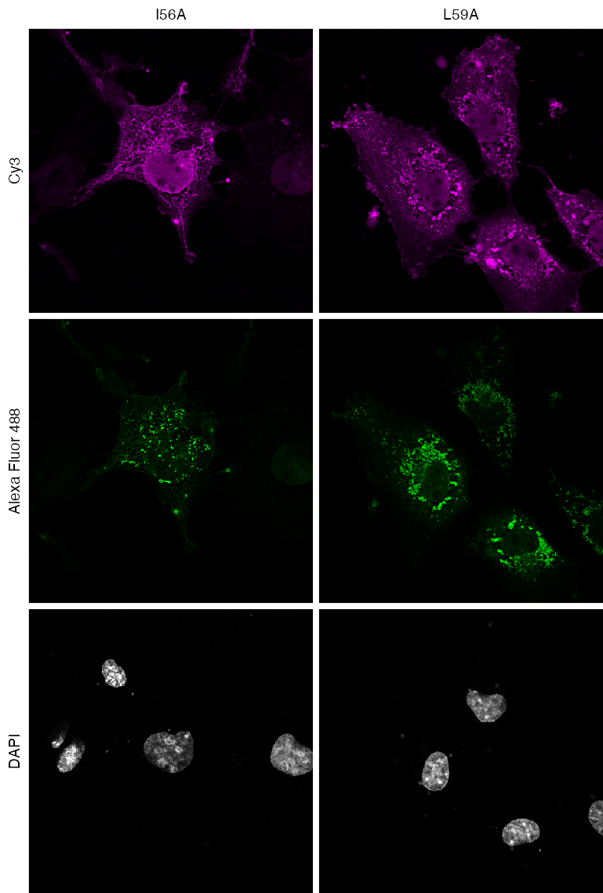
The rest of this README first looks at the data model, the tibble of images, and then at what tidymontage() can do with it.
The data model
One row per image
read_images() takes files or directories and returns a long tibble with one row per image: per file, channel, z-slice and time point. The img column holds lazy references to greyscale images; no pixels are read at this point. Colours are only applied when a montage is drawn.
images <- read_images("demo_images")
images
#> # A tibble: 34 × 20
#> filepath series channel_index channel z t img color channel_name fluor size_x size_y
#> <chr> <int> <int> <chr> <int> <int> <img> <chr> <chr> <chr> <int> <int>
#> 1 demo_ima… 1 1 Cy3 1 1 page 1 #FF0… Ch2-T1 Cy3 1796 1796
#> 2 demo_ima… 1 2 Alexa … 1 1 page 2 #00F… Ch1-T2 Alex… 1796 1796
#> 3 demo_ima… 1 3 DAPI 1 1 page 3 #FFF… Ch1-T3 DAPI 1796 1796
#> 4 demo_ima… 1 1 Cy3 1 1 page 1 #FF0… Ch2-T1 Cy3 1796 1796
#> 5 demo_ima… 1 2 Alexa … 1 1 page 2 #00F… Ch1-T2 Alex… 1796 1796
#> 6 demo_ima… 1 3 DAPI 1 1 page 3 #FFF… Ch1-T3 DAPI 1796 1796
#> 7 demo_ima… 1 1 Alexa … 1 1 page 1 #FF0… AF647-T1 Alex… 2024 2024
#> 8 demo_ima… 1 1 Alexa … 2 1 page 5 #FF0… AF647-T1 Alex… 2024 2024
#> 9 demo_ima… 1 1 Alexa … 3 1 page 9 #FF0… AF647-T1 Alex… 2024 2024
#> 10 demo_ima… 1 1 Alexa … 4 1 page 13 #FF0… AF647-T1 Alex… 2024 2024
#> # ℹ 24 more rows
#> # ℹ 8 more variables: size_z <int>, size_t <int>, bit_depth <int>, pixel_size <dbl>,
#> # pixel_unit <chr>, z_step <dbl>, meta_source <chr>, pixel_size_source <chr>How many images does each file contribute, and where did the metadata come from?
images |>
count(file = basename(filepath), meta_source, pixel_size_source, name = "images")
#> # A tibble: 3 × 4
#> file meta_source pixel_size_source images
#> <chr> <chr> <chr> <int>
#> 1 Cos7_eGFP-hL6-I56A_HA-hBCL-xL_63x_2019_12_20__12_23_13.ome.t… ome-xml ome-xml 3
#> 2 Cos7_eGFP-hL6-L59A_HA-hBCL-xL_63x_2019_12_20__12_29_05.ome.t… ome-xml ome-xml 3
#> 3 DIV14Actin-01-Airyscan Processing-02.tif imagej imagej 28Channel labels, colours and calibration come straight from the microscope metadata:
images |>
filter(grepl("Airyscan", filepath), z == 1) |>
select(channel, channel_name, color, size_x, size_z, pixel_size, z_step)
#> # A tibble: 4 × 7
#> channel channel_name color size_x size_z pixel_size z_step
#> <chr> <chr> <chr> <int> <int> <dbl> <dbl>
#> 1 Alexa Fluor 647 AF647-T1 #FF00FF 2024 7 0.0707 1.8
#> 2 Alexa Fluor 555 AF555-T2 #FF0000 2024 7 0.0707 1.8
#> 3 Alexa Fluor 488 AF488-T3 #00FF33 2024 7 0.0707 1.8
#> 4 Hoechst 33258 H3258-T4 #0000FF 2024 7 0.0707 1.8Select images with filter()
Every row is an image, and any selection of rows can be shown with tidymontage(). Here four z-slices of one channel, with the slices as columns. All slices share one display range, so the dimmer slices really have less signal:
stack <- images |> filter(grepl("Airyscan", filepath))
stack |>
filter(channel == "Alexa Fluor 488", z %in% c(1, 3, 5, 7)) |>
tidymontage(x = z)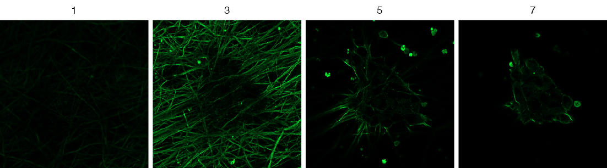
A single z-slice of all channels:
stack |>
filter(z == 4) |>
tidymontage()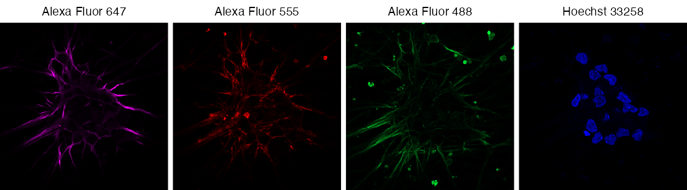
Project with summarise()
A maximum projection is a summarise() per channel. The result is still lazy: max of 7 is a recipe that is computed, plane by plane, only when the pixels are needed.
projected <- stack |>
summarise(img = max(img), .by = c(filepath, channel, color))
projected
#> # A tibble: 4 × 4
#> filepath channel color img
#> <chr> <chr> <chr> <img>
#> 1 demo_images/DIV14Actin-01-Airyscan Processing-02.tif Alexa Fluor 647 #FF00FF max of 7
#> 2 demo_images/DIV14Actin-01-Airyscan Processing-02.tif Alexa Fluor 555 #FF0000 max of 7
#> 3 demo_images/DIV14Actin-01-Airyscan Processing-02.tif Alexa Fluor 488 #00FF33 max of 7
#> 4 demo_images/DIV14Actin-01-Airyscan Processing-02.tif Hoechst 33258 #0000FF max of 7
tidymontage(projected)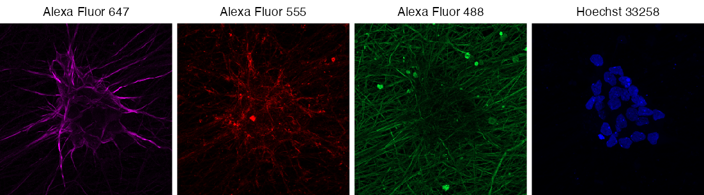
Projections can be restricted to part of the stack, just by filtering first:
stack |>
filter(z %in% 3:5) |>
summarise(img = max(img), .by = channel)
#> # A tibble: 4 × 2
#> channel img
#> <chr> <img>
#> 1 Alexa Fluor 647 max of 3
#> 2 Alexa Fluor 555 max of 3
#> 3 Alexa Fluor 488 max of 3
#> 4 Hoechst 33258 max of 3max(), min() and mean() are available. Several projections side by side are just several summaries, and pivot_longer() turns them back into rows:
projections <- stack |>
filter(channel == "Hoechst 33258") |>
summarise(max = max(img), mean = mean(img), min = min(img), .by = c(filepath, channel, color)) |>
pivot_longer(c(max, mean, min), names_to = "projection", values_to = "img")
projections
#> # A tibble: 3 × 5
#> filepath channel color projection img
#> <chr> <chr> <chr> <chr> <img>
#> 1 demo_images/DIV14Actin-01-Airyscan Processing-02.tif Hoechst 33258 #0000FF max max of 7
#> 2 demo_images/DIV14Actin-01-Airyscan Processing-02.tif Hoechst 33258 #0000FF mean mean of 7
#> 3 demo_images/DIV14Actin-01-Airyscan Processing-02.tif Hoechst 33258 #0000FF min min of 7
tidymontage(projections, x = projection)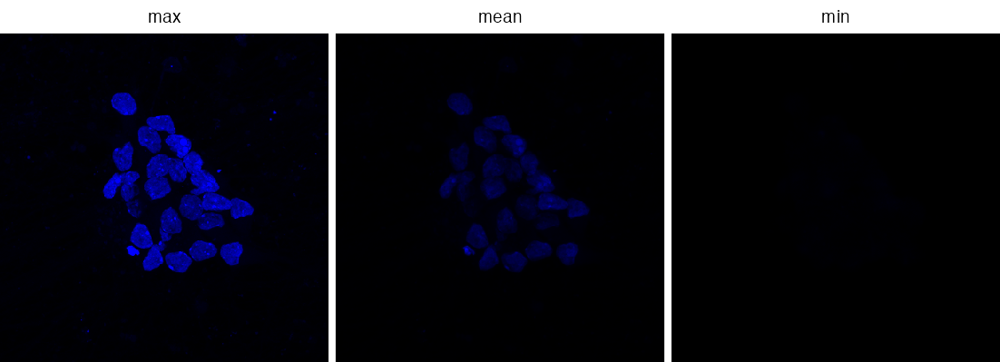
All three projections are images of the same channel, so they share one display range: the minimum projection really is that dim. To stretch each one on its own, unlink them on purpose with adjust_exposure(.by = c(channel, projection)).
Describe the experiment with mutate() and joins
Conditions, targets or anything else are ordinary columns. The mutant came from the file name above; the stained protein comes from a lookup table:
targets <- tribble(
~channel, ~target,
"Cy3", "HA-BCL-xL",
"Alexa Fluor 488", "eGFP-L6",
"DAPI", "nuclei"
)
cells <- cells |>
left_join(targets, by = "channel")
cells |> select(mutant, channel, target, color, img)
#> # A tibble: 6 × 5
#> mutant channel target color img
#> <chr> <chr> <chr> <chr> <img>
#> 1 I56A Cy3 HA-BCL-xL #FF00FF page 1
#> 2 I56A Alexa Fluor 488 eGFP-L6 #00FF00 page 2
#> 3 I56A DAPI nuclei #FFFFFF page 3
#> 4 L59A Cy3 HA-BCL-xL #FF00FF page 1
#> 5 L59A Alexa Fluor 488 eGFP-L6 #00FF00 page 2
#> 6 L59A DAPI nuclei #FFFFFF page 3Columns like target can be used in the montage right away:
cells |>
filter(target != "nuclei") |>
tidymontage(x = mutant, y = target)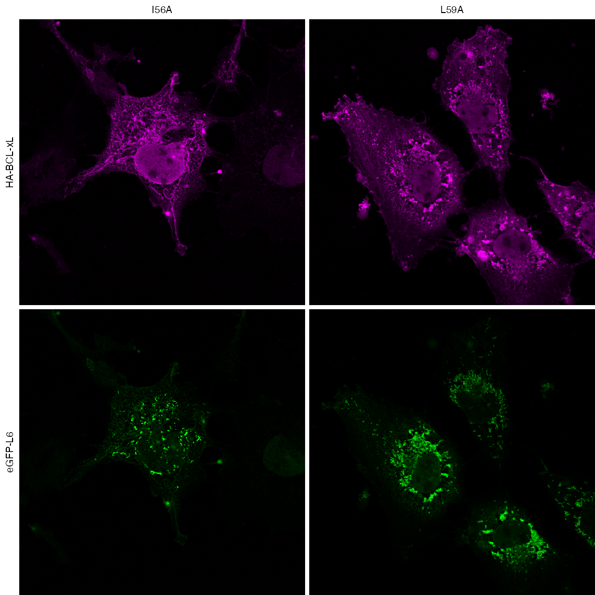
The color column holds the default colour of each image, so changing it is a mutate() as well. Nothing is re-read: colour is only used when images are drawn. (Within a montage, adjust_colors() does the same.)
cells |>
filter(mutant == "I56A") |>
mutate(color = case_match(channel, "Cy3" ~ "#E69F00", "Alexa Fluor 488" ~ "#56B4E9", "DAPI" ~ "#FFFFFF")) |>
tidymontage(x = target)
#> Warning: There was 1 warning in `mutate()`.
#> ℹ In argument: `color = case_match(...)`.
#> Caused by warning:
#> ! `case_match()` was deprecated in dplyr 1.2.0.
#> ℹ Please use `recode_values()` instead.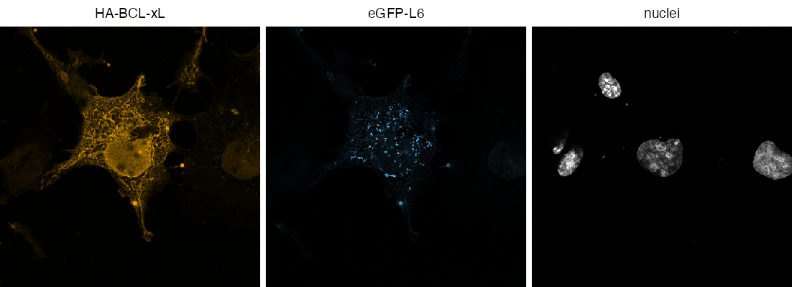
Things that are refused
Images only support operations that make sense for images:
# summing intensities across images is not a projection
stack |> summarise(img = sum(img), .by = channel)
#> Error in `summarise()`:
#> ℹ In argument: `img = sum(img)`.
#> ℹ In group 1: `channel = "Alexa Fluor 647"`.
#> Caused by error:
#> ! `sum()` is not supported for images.
#> ℹ Use `max()`, `min()` or `mean()` to project images.
# images have no natural order
stack |> arrange(img)
#> Error:
#> ! Images can't be sorted.
# projecting images of different sizes (2024 x 2024 and 1796 x 1796 pixels)
images |> summarise(img = max(img), .by = channel_index)
#> Error in `summarise()`:
#> ℹ In argument: `img = max(img)`.
#> ℹ In group 1: `channel_index = 1`.
#> Caused by error:
#> ! Can't compute `max()` of images with different sizes.Build a montage
Like tidyplot() in tidyplots, tidymontage() takes the mapping: columns mapped to x and y (here mutant) arrange blocks of panels, and the layout arranges the channels and views within them. The default grid puts the channels on the free axis:
cells |>
tidymontage(x = mutant)
cells |>
tidymontage(y = mutant)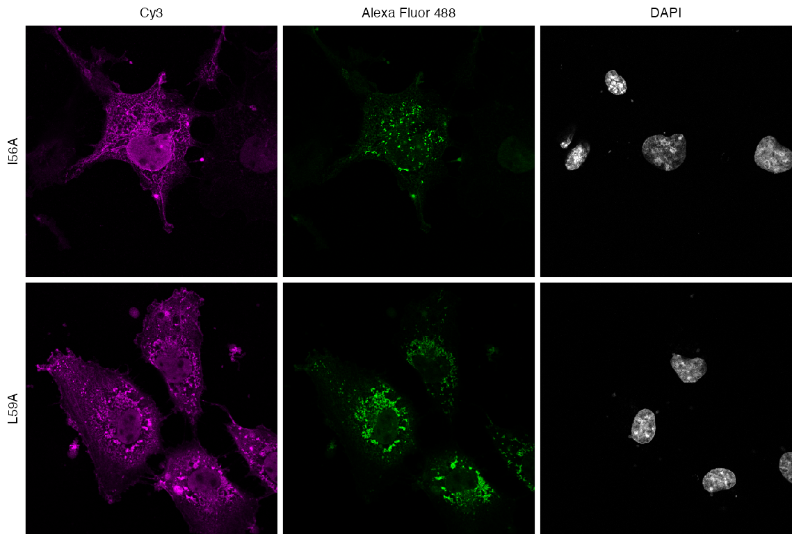
From there on, add_*() and adjust_*() verbs decide everything about display: merges, colours, display ranges, crops, zooms and scale bars.
Merges
add_merge() adds a merge of channels as a virtual channel. It takes its place in the layout like any other channel. Mapping channel (or a column determined by it, such as target) yourself overrides where the layout puts it:
cells |>
tidymontage(x = target, y = mutant) |>
add_merge(Cy3, `Alexa Fluor 488`, DAPI, name = "merge")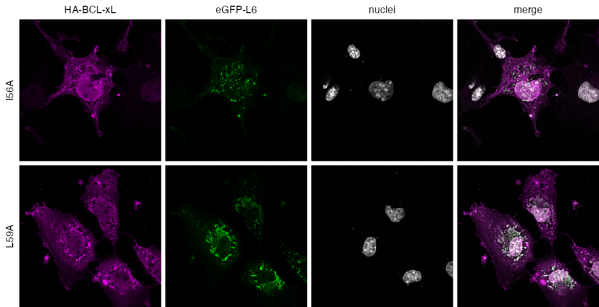
Channels are blended additively, each with its own colour and linked display range. Member channels don’t need panels of their own, and several merges are possible:
cells |>
tidymontage(x = c(mutant, channel), channel = c("proteins", "all")) |>
add_merge(Cy3, `Alexa Fluor 488`, name = "proteins") |>
add_merge(Cy3, `Alexa Fluor 488`, DAPI, name = "all")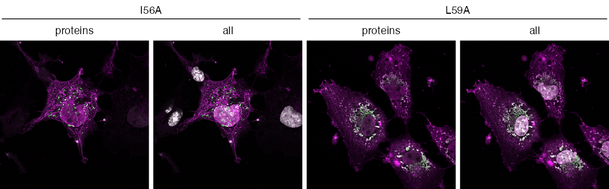
Display ranges are linked per channel by default: both mutants share one range per channel, so their brightness can be compared. adjust_exposure() changes the percentiles or sets values, and adjust_colors() overrides the colours from the metadata:
montage <- projected |>
tidymontage() |>
adjust_colors(`Hoechst 33258` = "#56B4E9") |>
adjust_exposure(min = "p0.1", max = "p99.8") |>
add_merge(`Alexa Fluor 647`, `Alexa Fluor 555`, `Alexa Fluor 488`, `Hoechst 33258`)
montage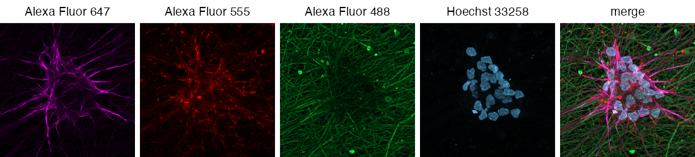
Overlays: where channels coincide
add_overlay() adds a panel that is bright only where all of its channels are bright, in a single colour. It is the minimum of the channels’ display- scaled intensities, so it is as bright as the weakest channel and isn’t stretched again: a faint overlap looks faint.
cells |>
tidymontage(x = mutant, channel = c("merge", "overlap")) |>
add_merge(Cy3, `Alexa Fluor 488`) |>
add_overlay(Cy3, `Alexa Fluor 488`, name = "overlap", color = "yellow") |>
add_color_legend()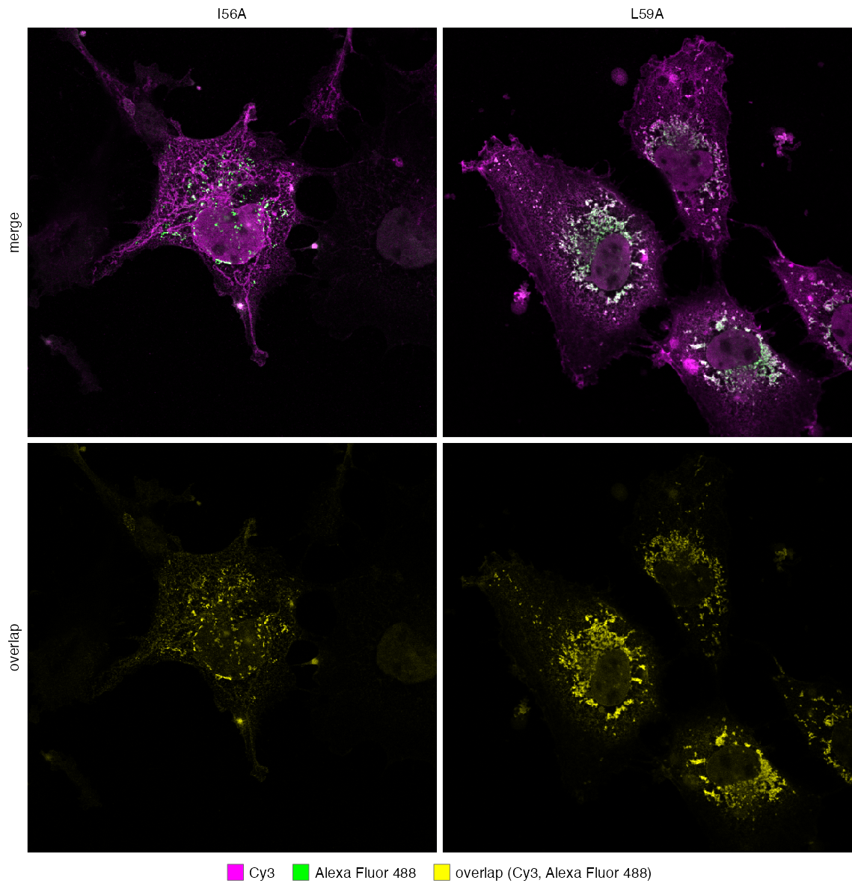
Black channels: dark signal on white
A channel coloured black is shown inverted: dark signal on a white background, with a thin frame. Merges always stay on black: there, black channels use their original colour from the metadata, and colors in add_merge() colours members differently in the merge only. Here both proteins are black on their own, and the merge shows Cy3 in its original magenta and Alexa Fluor 488 in yellow:
cells |>
tidymontage(x = mutant, channel = c("Cy3", "Alexa Fluor 488", "merge")) |>
adjust_colors(Cy3 = "black", `Alexa Fluor 488` = "black") |>
add_merge(Cy3, `Alexa Fluor 488`, colors = c(`Alexa Fluor 488` = "yellow")) |>
add_color_legend()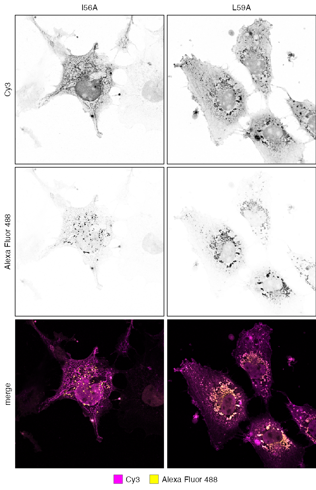
Colormaps
Instead of a single colour, lut() colours a channel with a colormap such as magma or viridis. Perceptually uniform maps show differences in intensity more faithfully, which helps with quantitative images. Overlays can use a colormap too. Merges need single colours, so there, colormap channels use their original colour, like black channels do. The legend shows colormaps as colour bars, labelled with the display range:
cells |>
tidymontage(x = mutant, channel = c("Cy3", "overlap", "merge")) |>
adjust_colors(Cy3 = lut("magma")) |>
add_overlay(Cy3, `Alexa Fluor 488`, name = "overlap", color = lut("viridis")) |>
add_merge(Cy3, `Alexa Fluor 488`) |>
add_color_legend()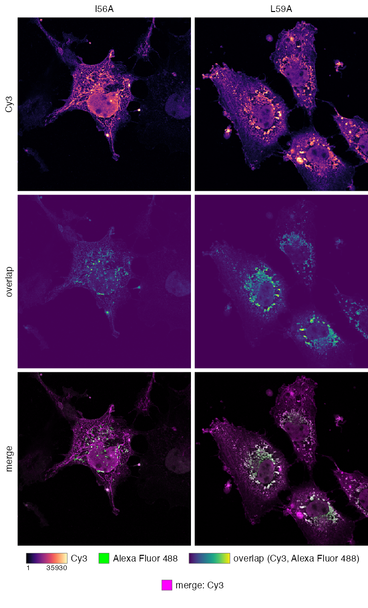
Crops and zooms
add_crop() shows a region of each image. The size is given once, in micrometres, so all panels share one magnification; only the position can differ between images. Positions are the region’s center, relative to the full image (0-1), here one per mutant.
add_zoom() adds a blow-up as a new view: panels of their own, which the grid places next to the main panels. A box marks the region on the main panels, here only on the merges:
crops <- tribble(
~mutant, ~x, ~y,
"I56A", 0.47, 0.40,
"L59A", 0.42, 0.55
)
zooms <- tribble(
~mutant, ~x, ~y,
"I56A", 0.50, 0.40,
"L59A", 0.40, 0.48
)
cells |>
tidymontage(x = mutant) |>
add_merge(Cy3, `Alexa Fluor 488`, DAPI) |>
add_crop(width = 60, center = crops) |>
add_zoom(width = 15, center = zooms, box = "merge")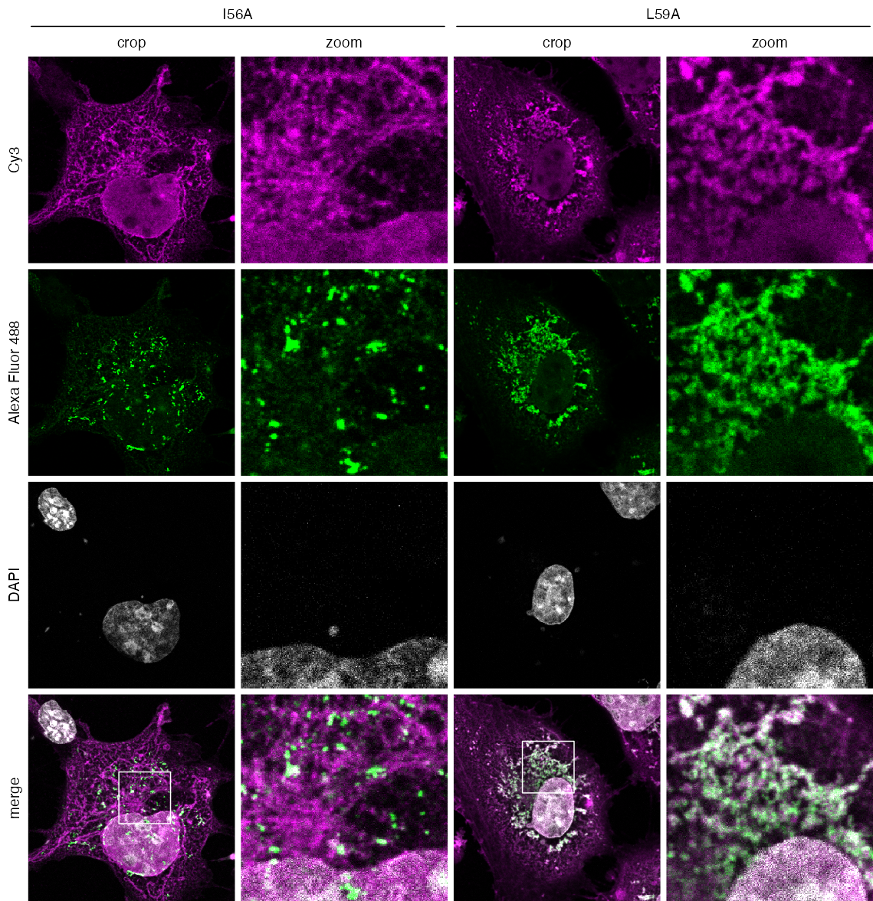
cells |>
tidymontage(x = mutant) |>
add_merge(Cy3, `Alexa Fluor 488`, DAPI) |>
add_crop(width = 60, center = crops) |>
add_zoom(width = 15, center = zooms, box = "merge") |>
preview_positions()
cells |>
tidymontage(x = mutant) |>
add_merge(Cy3, `Alexa Fluor 488`, DAPI) |>
add_crop(width = 60, center = crops) |>
add_zoom(width = 15, center = zooms, box = "merge") |>
preview_exposure("DAPI")
#> ℹ "DAPI": 'Cos7_eGFP-hL6-I56A_HA-hBCL-xL_63x_2019_12_20__12_23_13.ome.tif' (the brightest of 2
#> images).
#> ℹ Percentiles from 2 images sharing its display range.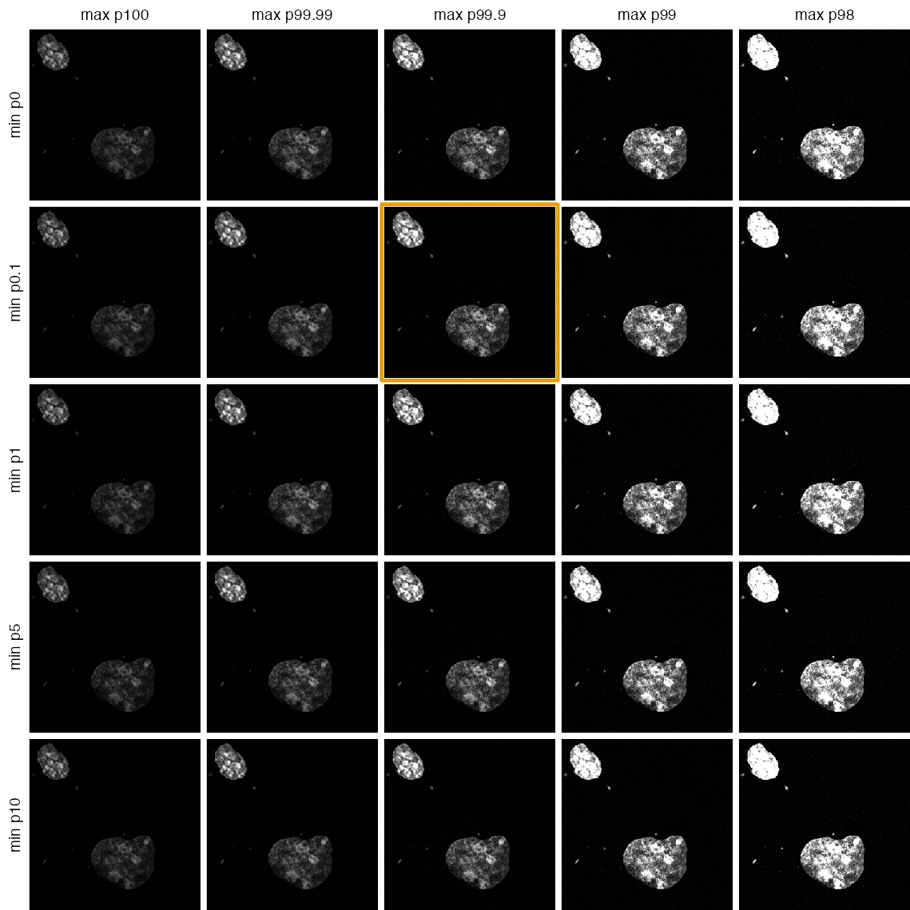
Display ranges are computed from the full images, so cropping doesn’t change brightness. Map view yourself to put views elsewhere, and choose levels as usual:
cells |>
tidymontage(x = mutant, y = view, channel = "merge") |>
add_merge(Cy3, `Alexa Fluor 488`, DAPI) |>
add_zoom(width = 20, center = zooms)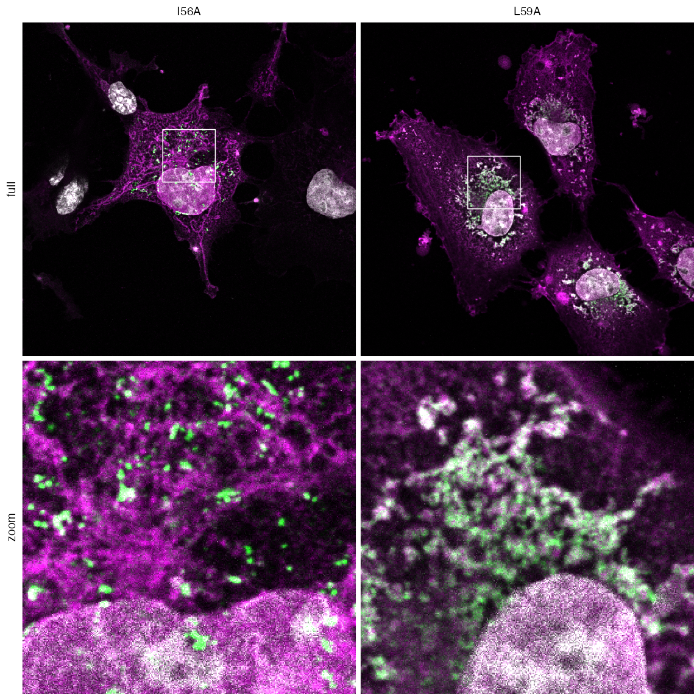
Rows and columns can differ in shape: all panels in a row share a height and all panels in a column a width. So zooms can be flat strips, on rows of their own below the crops:
cells |>
tidymontage(x = channel, y = c(mutant, view)) |>
add_merge(Cy3, `Alexa Fluor 488`, DAPI) |>
add_crop(width = 60, center = crops) |>
add_zoom(width = 15, height = 4, center = zooms)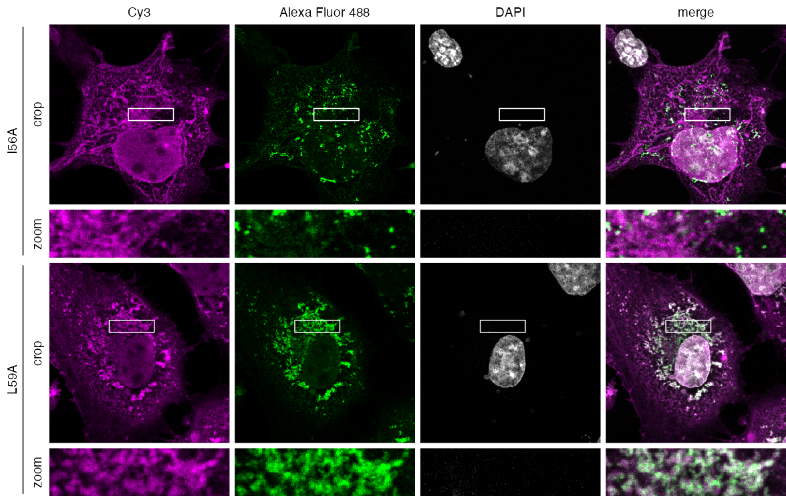
Call add_zoom() again for more zooms. With two or more, each zoom gets a number, shown in the top-left corner of its boxes and its panels, and the views are named "zoom 1", "zoom 2", and so on:
zooms_2 <- tribble(
~mutant, ~x, ~y,
"I56A", 0.40, 0.55,
"L59A", 0.52, 0.62
)
cells |>
tidymontage(x = view, y = mutant, channel = "merge") |>
add_merge(Cy3, `Alexa Fluor 488`, DAPI) |>
add_crop(width = 60, center = crops) |>
add_zoom(width = 15, center = zooms) |>
add_zoom(width = 15, center = zooms_2)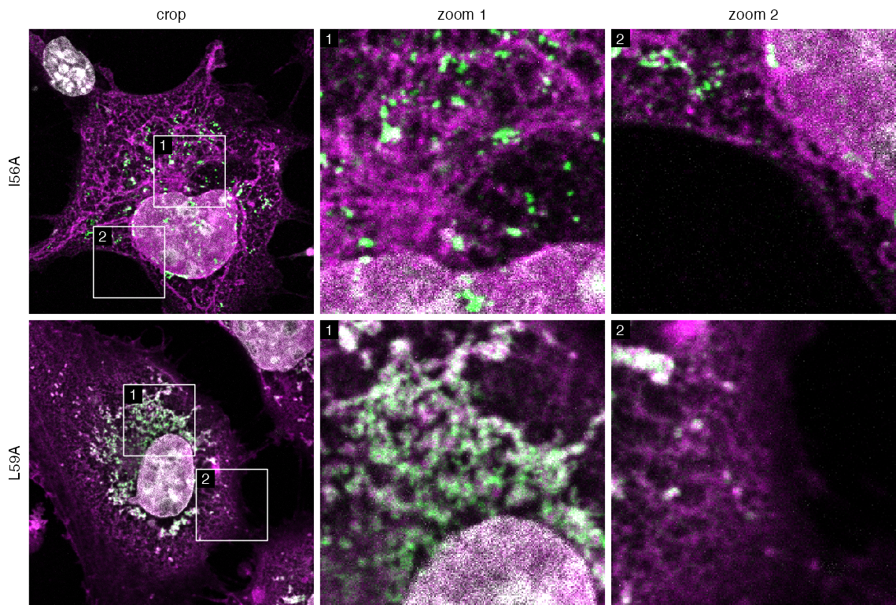
Crops and zooms can be rotated, for structures that run at an angle. The angle is the one Fiji reports for a line drawn along the structure, in degrees counterclockwise, and can differ between images. The panels show the rotated regions upright. Zooms take the angle of the crop, so their boxes sit square in it:
crops_rotated <- crops |>
mutate(angle = c(30, -20))
cells |>
tidymontage(x = view, y = mutant, channel = "merge") |>
add_merge(Cy3, `Alexa Fluor 488`, DAPI) |>
add_crop(width = 60, center = crops_rotated) |>
add_zoom(width = 15, center = zooms)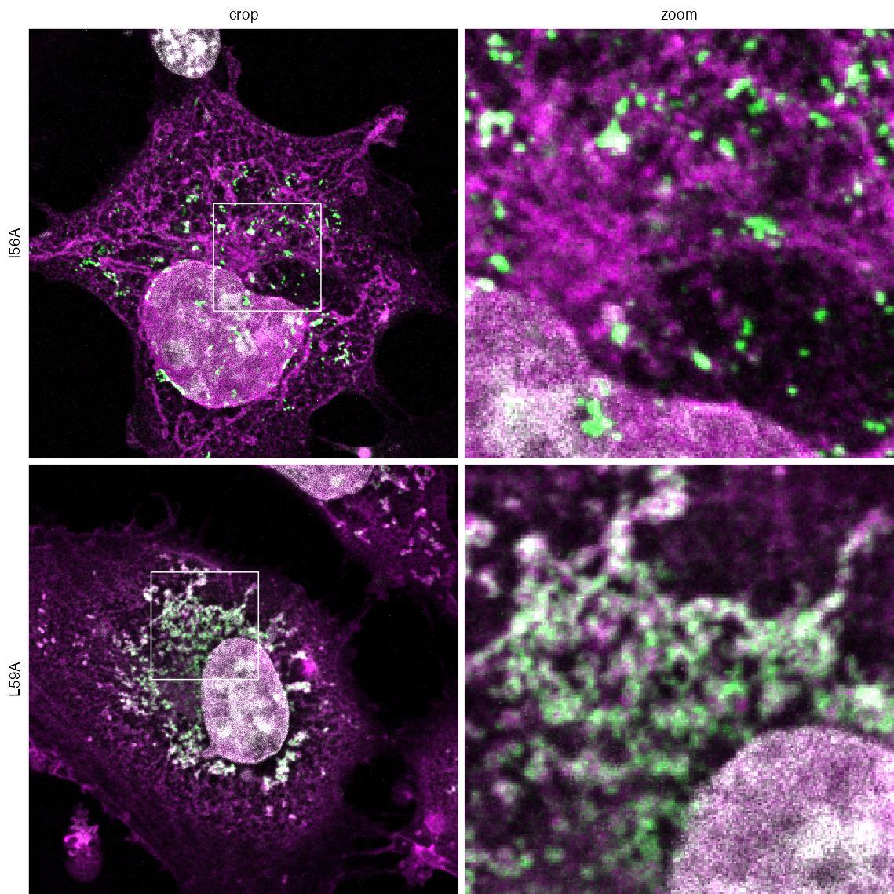
Arrowheads
add_arrows() points at locations with arrowheads. An arrowhead belongs to an image, not to a channel: it is drawn at the same place in every panel of that image, merges included, and in zooms wherever its tip is inside. Positions are given like the centers of crops, here several per mutant. Arrowheads are white on dark panels and black on light ones:
arrows <- tribble(
~mutant, ~x, ~y,
"I56A", 0.45, 0.42,
"I56A", 0.56, 0.40,
"L59A", 0.41, 0.50
)
cells |>
tidymontage(x = mutant, channel = c("Cy3", "Alexa Fluor 488", "merge")) |>
adjust_colors(`Alexa Fluor 488` = "black") |>
add_merge(Cy3, `Alexa Fluor 488`) |>
add_arrows(arrows, size = 3)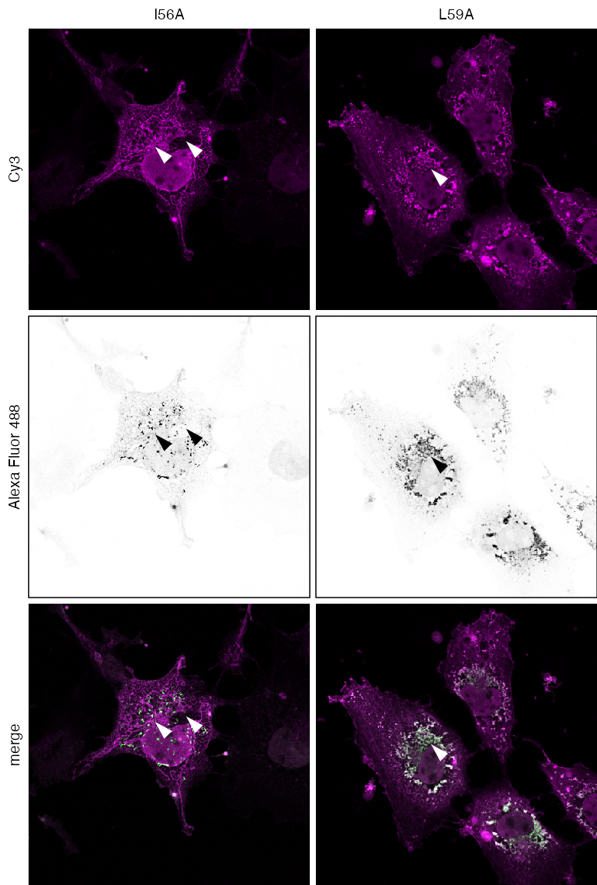
Finding exposure and positions
Two previews help to find the ballpark before fine-tuning the arguments. preview_exposure() shows one image of a channel with 25 combinations of display ranges, ordered by how the image looks: brighter to the right (lower max), darker background downwards (higher min). The current setting is outlined. The percentiles come from all images of the channel, as in the montage:
montage_cz <- cells |>
tidymontage(x = mutant) |>
add_merge(Cy3, `Alexa Fluor 488`, DAPI) |>
add_crop(width = 60, center = crops) |>
add_zoom(width = 15, center = zooms)
montage_cz |>
preview_exposure("Cy3")
#> ℹ "Cy3": 'Cos7_eGFP-hL6-L59A_HA-hBCL-xL_63x_2019_12_20__12_29_05.ome.tif' (the brightest of 2
#> images).
#> ℹ Percentiles from 2 images sharing its display range.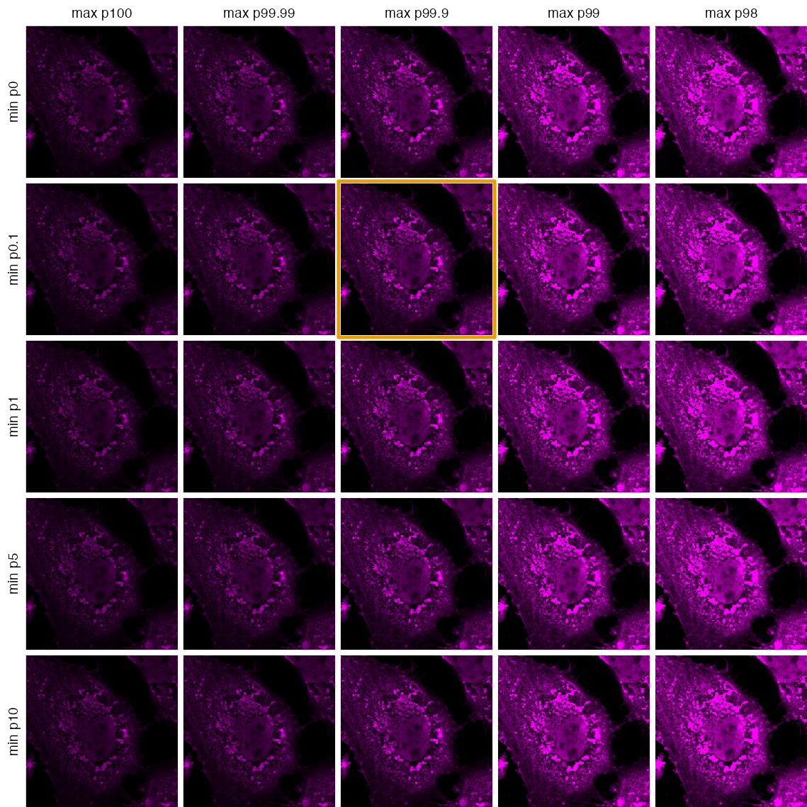
preview_positions() shows the full images with relative axes from 0 to 1, the values that center in add_crop() and add_zoom() expects. The current crop and zoom are outlined, which also shows their size:
montage_cz |>
preview_positions()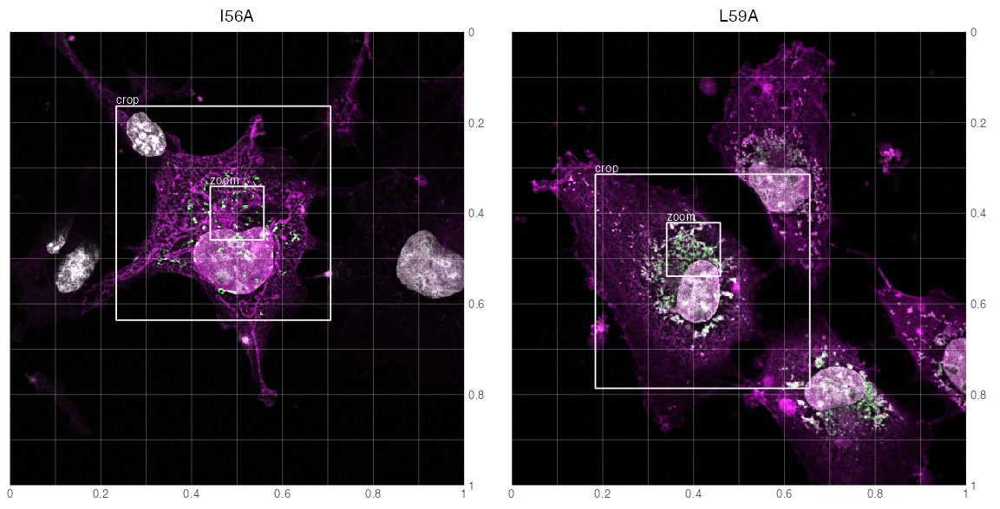
Hero layout
Layouts work like themes: the same montage with layout = "hero" shows one big panel per block, by default the merge of the crop, next to the single channels of the zoom, labelled outside the images. Nothing else changes:
cells |>
tidymontage(x = mutant, layout = "hero") |>
add_merge(Cy3, `Alexa Fluor 488`, DAPI) |>
add_crop(width = 60, center = crops) |>
add_zoom(width = 15, center = zooms) |>
add_scale_bar()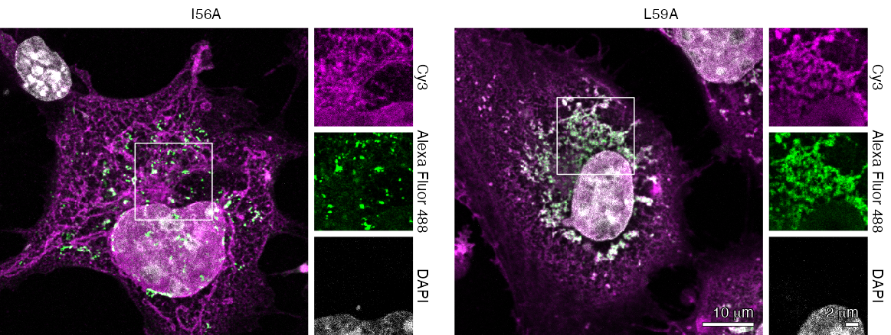
layout_hero() moves the small panels to the "bottom" or "left", labels = FALSE removes their labels, and panel() chooses other hero or side panels:
cells |>
tidymontage(x = mutant, layout = layout_hero(position = "bottom", labels = FALSE)) |>
add_merge(Cy3, `Alexa Fluor 488`, DAPI) |>
add_crop(width = 60, center = crops) |>
add_zoom(width = 15, center = zooms) |>
add_scale_bar() |>
adjust_colors(DAPI = "#F1CD36") |>
add_color_legend(position = "bottom")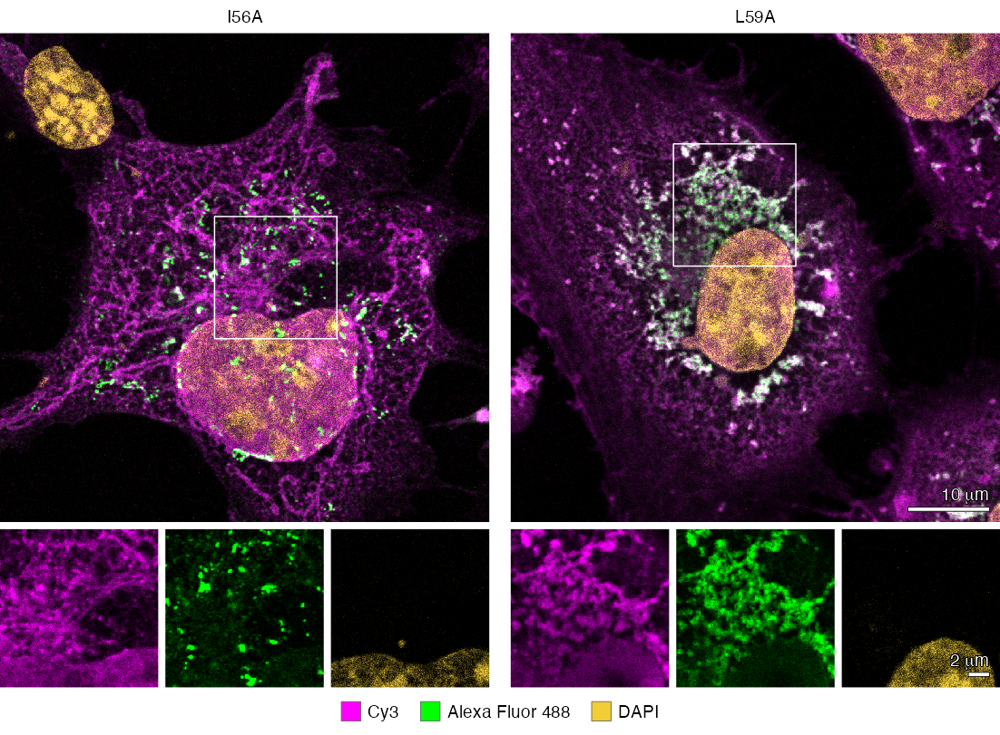
cells |>
tidymontage(x = mutant, layout = layout_hero(position = "bottom", side = panel(channel = c("Cy3", "Alexa Fluor 488", "merge"), view = c("zoom")))) |>
add_merge(Cy3, `Alexa Fluor 488`, DAPI) |>
add_crop(width = 60, center = crops) |>
add_zoom(width = 15, center = zooms) |>
add_scale_bar() |>
adjust_colors(DAPI = "#F1CD36")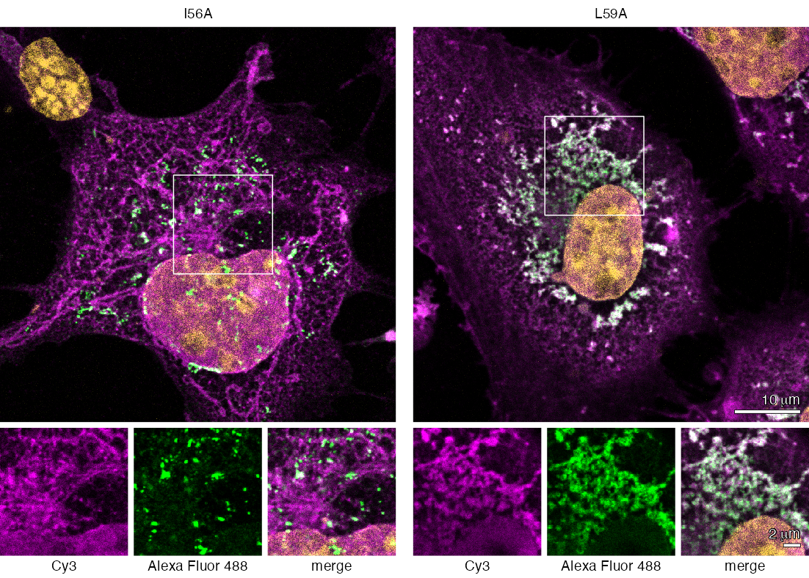
cells |>
tidymontage(x = mutant, layout = layout_hero(position = "bottom", side = panel(channel = c("Cy3", "Alexa Fluor 488", "merge"), view = c("zoom")))) |>
add_merge(Cy3, `Alexa Fluor 488`, DAPI, colors = c(DAPI = "#F1CD36")) |>
add_crop(width = 60, center = crops) |>
add_zoom(width = 15, center = zooms) |>
add_scale_bar() |>
adjust_colors(DAPI = "#000000", Cy3 = "#000000", `Alexa Fluor 488` = "#000000")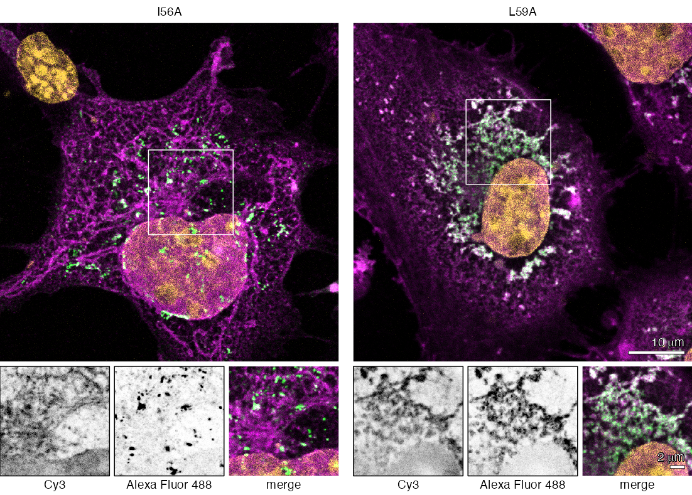
cells |>
tidymontage(x = mutant, layout = layout_hero(position = "bottom")) |>
add_merge(Cy3, `Alexa Fluor 488`, DAPI, colors = c(DAPI = "#F1CD36")) |>
add_crop(width = 60, center = crops) |>
add_zoom(width = 15, center = zooms) |>
add_scale_bar() |>
adjust_colors(DAPI = "#000000", Cy3 = "#000000", `Alexa Fluor 488` = "#000000")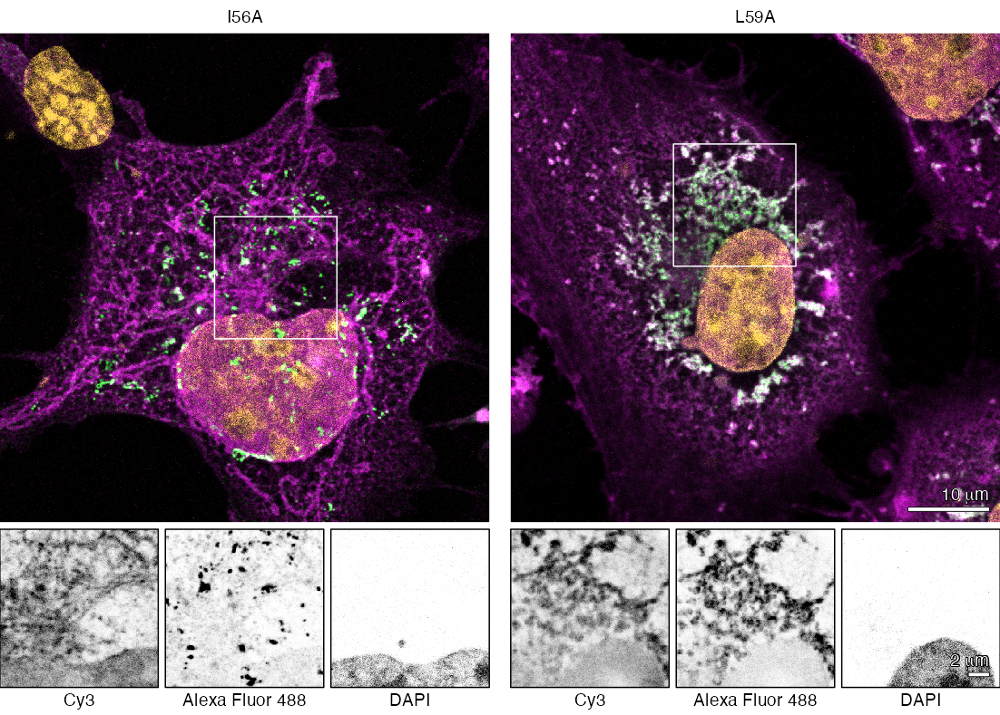
cells |>
tidymontage(x = mutant) |>
add_merge(Cy3, `Alexa Fluor 488`, DAPI, colors = c(DAPI = "#F1CD36")) |>
add_crop(width = 60, center = crops) |>
add_zoom(width = 15, center = zooms) |>
add_scale_bar() |>
adjust_colors(DAPI = "#000000", Cy3 = "#000000", `Alexa Fluor 488` = "#000000")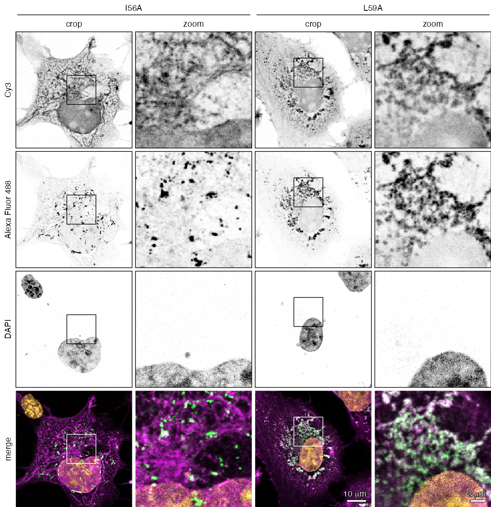
Side panels can have another shape than the hero. With stack = TRUE, they are stacked: below the hero, each strip is as wide as the hero, for example a flat zoom of each channel under a big merge:
cells |>
tidymontage(x = mutant, layout = layout_hero(position = "right", stack = TRUE)) |>
add_merge(Cy3, `Alexa Fluor 488`, DAPI) |>
add_crop(width = 60, center = crops) |>
add_zoom(width = 4, height = 15, center = zooms) |>
add_scale_bar() |>
adjust_size(width = 160) |>
adjust_colors(DAPI = "#F1CD36") |>
add_color_legend(position = "bottom")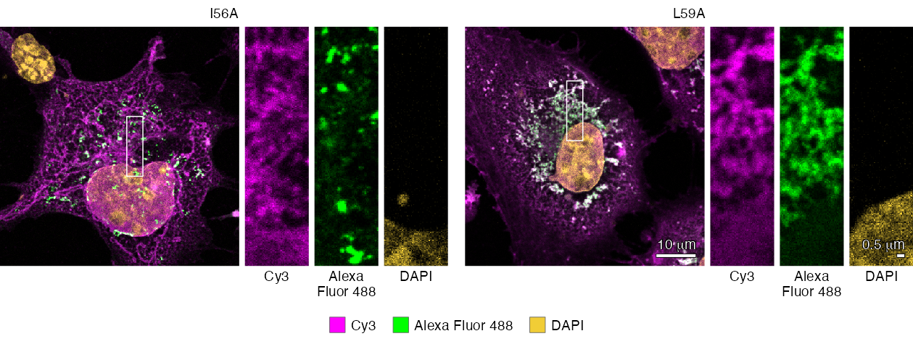
cells |>
tidymontage(x = mutant) |>
add_merge(Cy3, `Alexa Fluor 488`, DAPI) |>
add_crop(width = 60, center = crops) |>
add_zoom(width = 4, height = 15, center = zooms) |>
add_scale_bar() |>
adjust_size(width = 160) |>
adjust_colors(DAPI = "#F1CD36") |>
add_color_legend(position = "bottom")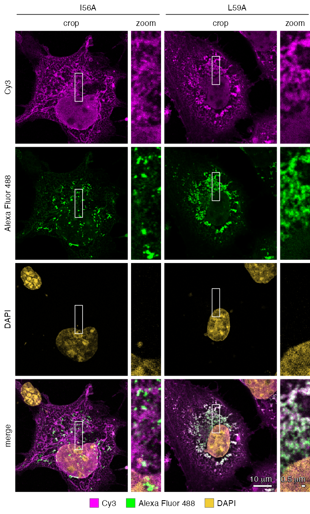
cells |>
tidymontage(x = mutant, layout = layout_hero(position = "bottom", stack = TRUE)) |>
add_merge(Cy3, `Alexa Fluor 488`, DAPI) |>
add_crop(width = 60, center = crops) |>
add_zoom(width = 15, height = 3, center = zooms) |>
add_scale_bar() |>
adjust_size(width = 160) |>
adjust_colors(DAPI = "#F1CD36") |>
add_color_legend(position = "bottom")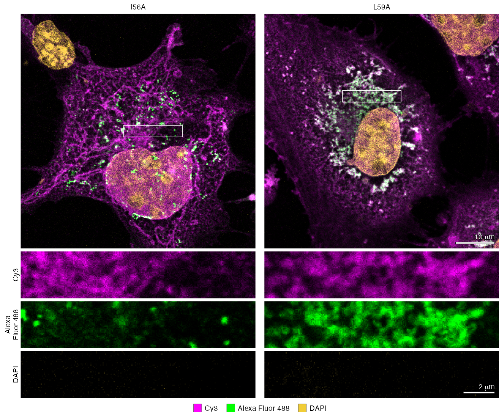
Colour legend
add_color_legend() explains the colours, like a ggplot2 legend: a swatch and the name of each channel shown, including the members of merges. In a hero layout, it can replace the labels of the small panels. It goes at the bottom (the default), on top or on the right, outside the panels, so the montage grows and the panels keep their size:
cells |>
tidymontage(x = mutant, layout = layout_hero(position = "bottom", labels = FALSE)) |>
add_merge(Cy3, `Alexa Fluor 488`, DAPI) |>
add_crop(width = 60, center = crops) |>
add_zoom(width = 15, center = zooms) |>
add_scale_bar() |>
add_color_legend()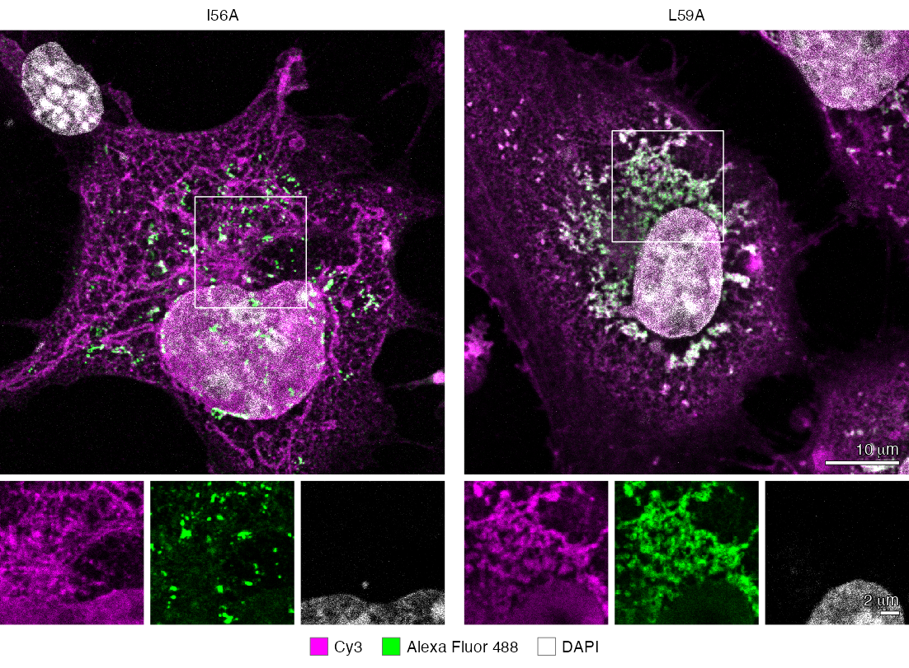
Scale bars and headers
add_scale_bar() draws one scale bar per view, in its bottom-right panel; all panels of a view share one magnification, so one bar is enough. Without a length, a round length of about a fifth of the panel is chosen. Scale bars need a known pixel size.
Row and column headers name the mapped levels. When several dimensions share an axis, the headers are nested; adjust_headers() hides or restyles them:
cells |>
tidymontage(x = mutant) |>
add_merge(Cy3, `Alexa Fluor 488`, DAPI) |>
add_crop(width = 60, center = crops) |>
add_zoom(width = 15, center = zooms, box = "merge") |>
add_scale_bar()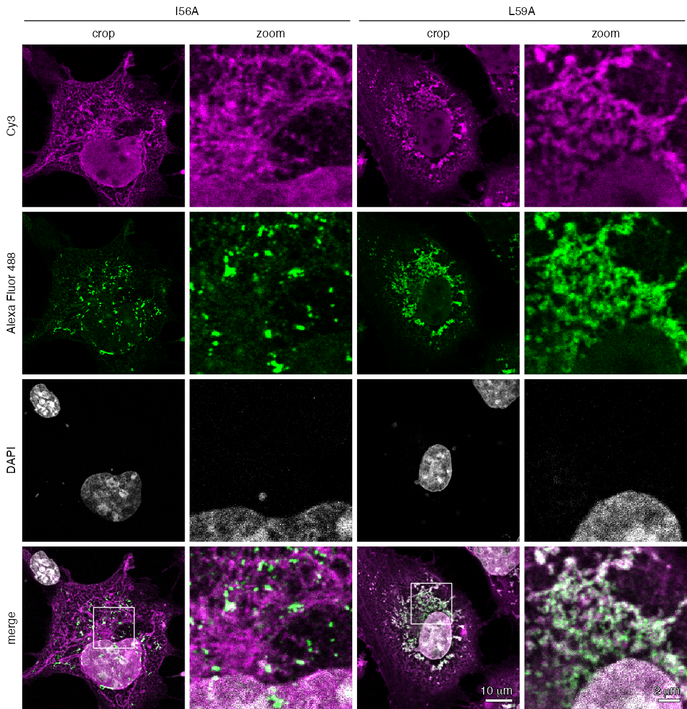
Recipes and exact sizes
The montage keeps its recipe, and get_panels() shows the layout in mm without reading any pixels:
cat(format(montage), sep = "\n")
#> <tidymontage> 4 images from 1 file, 4 channels
#> tidymontage(images, width = 140, height = 140)
#> steps:
#> 1. adjust_colors(`Hoechst 33258` = "#56B4E9")
#> 2. adjust_exposure(min = "p0.1", max = "p99.8", .by = channel)
#> 3. add_merge(`Alexa Fluor 647`, `Alexa Fluor 555`, `Alexa Fluor 488`, `Hoechst 33258`, name = "merge")
get_panels(montage)
#> # A tibble: 5 × 16
#> col row channel view xmin ymin xmax ymax merge overlay background px_xmin px_xmax px_ymin
#> <int> <int> <chr> <chr> <dbl> <dbl> <dbl> <dbl> <lgl> <lgl> <chr> <dbl> <dbl> <dbl>
#> 1 1 1 Alexa … full 0 4.69 27.2 31.9 FALSE FALSE black 1 2024 1
#> 2 2 1 Alexa … full 28.2 4.69 55.4 31.9 FALSE FALSE black 1 2024 1
#> 3 3 1 Alexa … full 56.4 4.69 83.6 31.9 FALSE FALSE black 1 2024 1
#> 4 4 1 Hoechs… full 84.6 4.69 112. 31.9 FALSE FALSE black 1 2024 1
#> 5 5 1 merge full 113. 4.69 140 31.9 TRUE FALSE black 1 2024 1
#> # ℹ 2 more variables: px_ymax <dbl>, angle <dbl>Like plots in tidyplots, montages have a fixed physical size: by default, the panels and gaps (without headers) fit into a box of 90 x 90 mm, keeping the shape of the panels. Set the size in tidymontage() or later with adjust_size(); NA leaves one side free. tidymontage_options() changes the default for all montages of a session; this README uses tidymontage_options(width = 140, height = 140). Printing and saving use the same size, so the figure looks the same on screen and in the file:
montage |>
adjust_size(width = 180, height = NA) |>
save_montage("figure.pdf")
#> Saved figure.pdf (180 x 40.2 mm).The layout explains itself
Every panel must show exactly one image, and the montage says so when it doesn’t:
# two mutants, but only channels are mapped
cells |> tidymontage(x = channel) |> get_panels()
#> Error in `get_panels()`:
#> ! 2 images would share one panel (channel = Cy3).
#> ℹ Each panel shows one image. Summarise z-slices or time points first, e.g. `summarise(img =
#> max(img), .by = ...)`, or map another column such as filepath to `x` or `y`.
# levels can be chosen and ordered
cells |>
tidymontage(x = mutant, channel = "DAPI") |>
get_panels()
#> # A tibble: 2 × 17
#> col row channel view mutant xmin ymin xmax ymax merge overlay background px_xmin px_xmax
#> <int> <int> <chr> <chr> <chr> <dbl> <dbl> <dbl> <dbl> <lgl> <lgl> <chr> <dbl> <dbl>
#> 1 1 1 DAPI full I56A 0 4.69 69.5 74.2 FALSE FALSE black 1 1796
#> 2 2 1 DAPI full L59A 70.5 4.69 140 74.2 FALSE FALSE black 1 1796
#> # ℹ 3 more variables: px_ymin <dbl>, px_ymax <dbl>, angle <dbl>
# unlinking display ranges across channels is possible, but flagged
tidymontage(cells, x = mutant) |> adjust_exposure(.by = mutant)
#> Warning: A display range is shared by several channels.
#> ℹ Display ranges are usually linked per channel: include channel in `.by` of `adjust_exposure()`.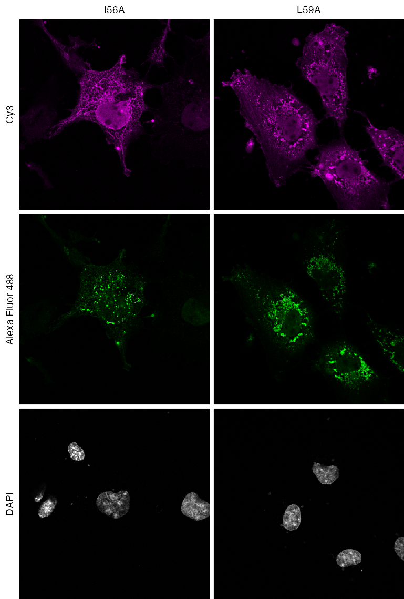